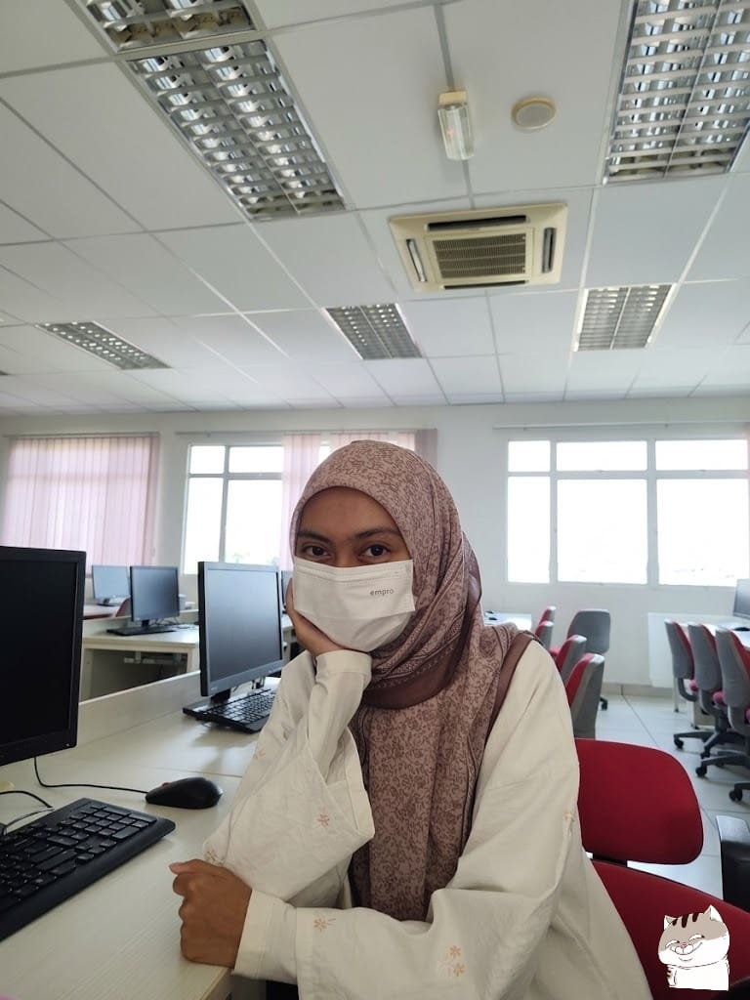

I started my primary education at Sekolah Kebangsaan Shah Alam and I pursued my secondary education at Sekolah Menengah Kebangsaan Seksyen 16 Shah Alam. When I was 16 years old, I was a student of the technical science stream until I was 17. Currently, I am pursuing my studies in Information Science at UiTM Rembau. Throughout my academic journey, I have been involved in various assignments, group discussions, presentations and projects that require collaboration and critical thinking. These experiences have helped me improve not only my academic knowledge but also important soft skills such as communication, teamwork, problem solving and time management. I have learned how to work effectively with others, share ideas and deal with challenges in a more mature and responsible manner.

My hobby is learning and mastering new languages as a way to expand my knowledge and improve myself. Currently, I am in the process of learning the Italian language through various platforms such as TikTok, Youtube and Duolingo. In addition to that, I am also learning Malaysian Sign Language, as I find it meaningful and useful for communicating with a wider community. Besides language learning, I also enjoy trying different types of food and exploring new places, as these experiences allow me to gain new perspectives and broaden my understanding of different cultures and lifestyles. I consider myself an introverted person and a slow learner, which means I may take a longer time to fully understand certain things. However, I see this as a strength rather than a weakness, as I tend to be more careful, patient, and detail-oriented in my learning process. I believe that with consistency, determination, and a willingness to keep improving, I am able to overcome challenges and continue developing my skills for future growth.
Linked Link
If you have any problem, please contact me:
If you have any problem, please contact me.
Mail Me
If you have any problem, please contact me.
Mail Me
If you have any problem, please contact me.
Mail Me
Yahoo (ALT1)
Google (ALT2)
Bing (ALT3)